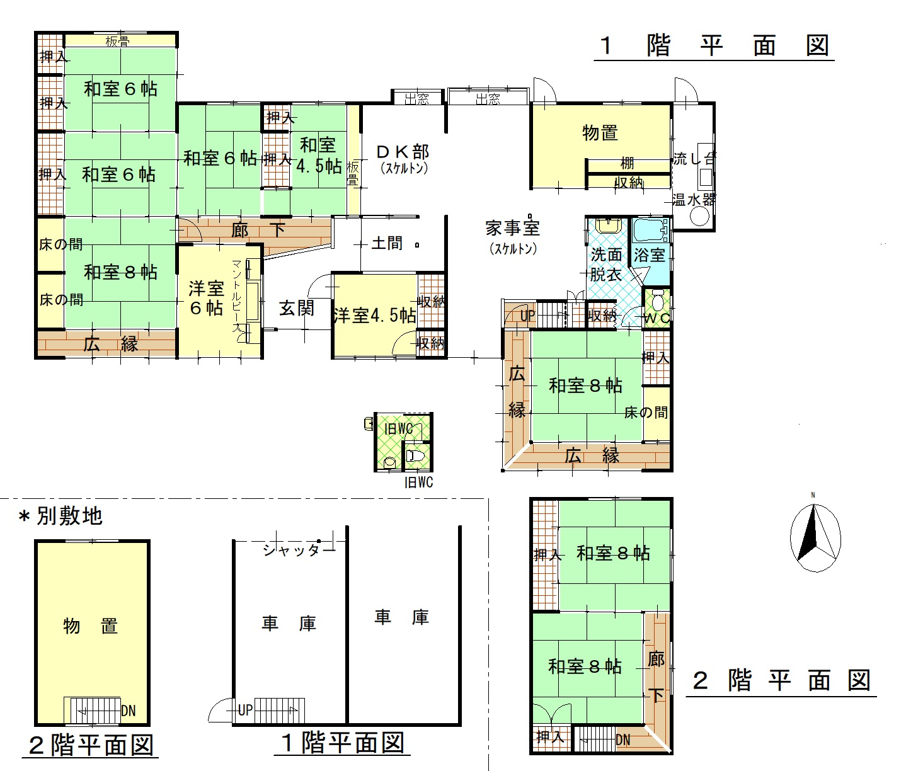

Rural farmland · Kami-Awa, Iga
Large two-storey kominka with a 478 m² field
¥6,000,000≈ €32,400

Condition
Interior of some rooms and the kitchen removed — a new kitchen needs to be installed
From the Iga City Akiya Bank survey. We translate the full inspection notes on request.
Key facts
- Location
- Kami-Awa, Iga, Mie 伊賀市上阿波
- Area
- Rural farmland 農村部エリア
- Layout
- 10DK
- Structure
- Wooden, two storeys
- Built
- 1968 (extended 1988)
- Land
- 765.64 m²
- Floor area
- 286.46 m²
- Water
- Mains water
- Drainage
- Septic tank
- Toilet
- Flush (former toilet: pit)
- Bath
- Kerosene
- Gas
- Propane
- Access
- JR Kansai Line, Tsuge Station 16 km · Honganji bus stop 0.4 km
- Schools
- Elementary 10 km · Junior high 9.1 km
- Shops
- Supermarket 10 km · Convenience store 10 km
- Other
- Garage for 2 cars plus space for about 10 more · Road approx. 4.4 m wide · Outbuildings (toilet, shed, garage) · Field 478 m² (in addition to the land area) · The price shown in the YouTube video is out of date
360° virtual tour
Walk through the houseLook around every room in 360°, from your own sofa. Opens the Iga City virtual tour in a new tab ↗Video tour
Floor plan

Location
The exact address is shared after registration — the map shows the district.
Similar homes
-
 Rural farmland360° tour
Rural farmland360° tourKōno, Iga No. 614
Kominka with a two-storey storehouse and a field nearby
- 10DK
- 134 m² house
- 445 m² land
¥5,800,000≈ €31,400
-
 Rural farmland360° tour
Rural farmland360° tourKawahigashi, Iga No. 564
Two-storey kominka with its original kamado stove
- 12K
- 280 m² house
- 458 m² land
¥5,500,000≈ €29,700
-
 Rural farmland360° tour
Rural farmland360° tourAo, Iga No. 580
Kominka within walking distance of station, shops and convenience store
- 8DK
- 228 m² house
- 897 m² land
¥6,500,000≈ €35,100